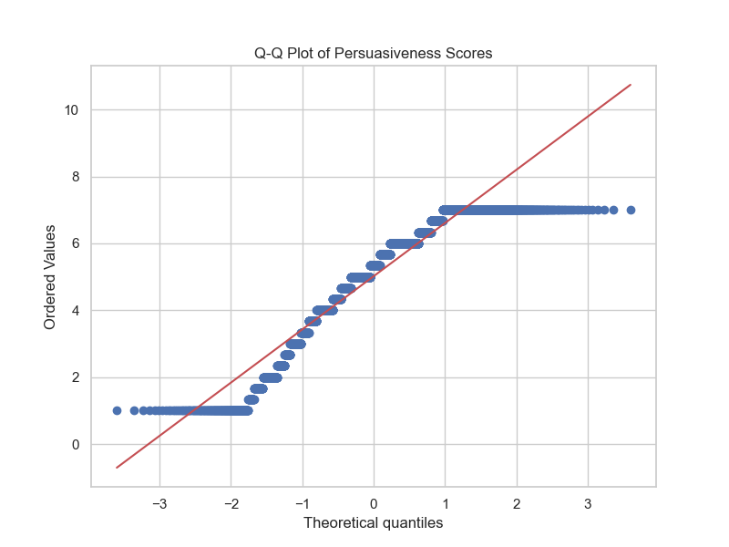
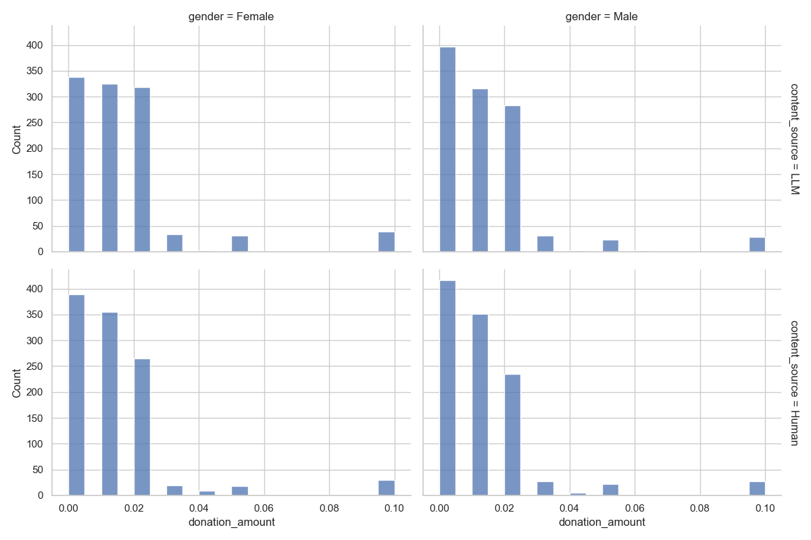
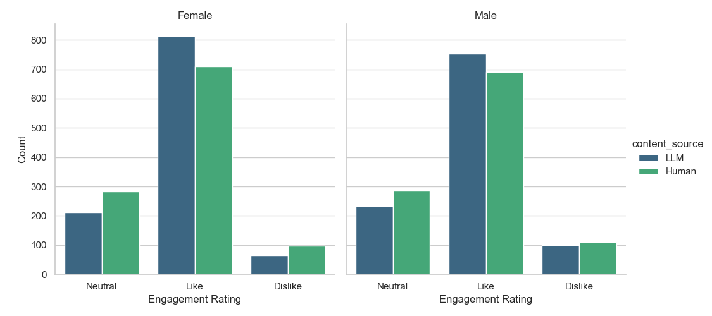
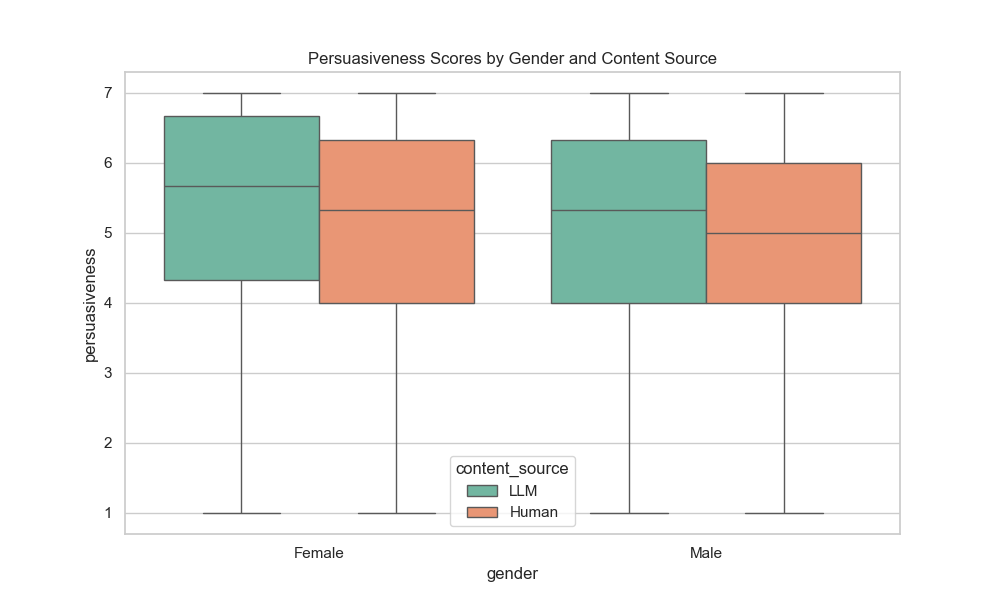
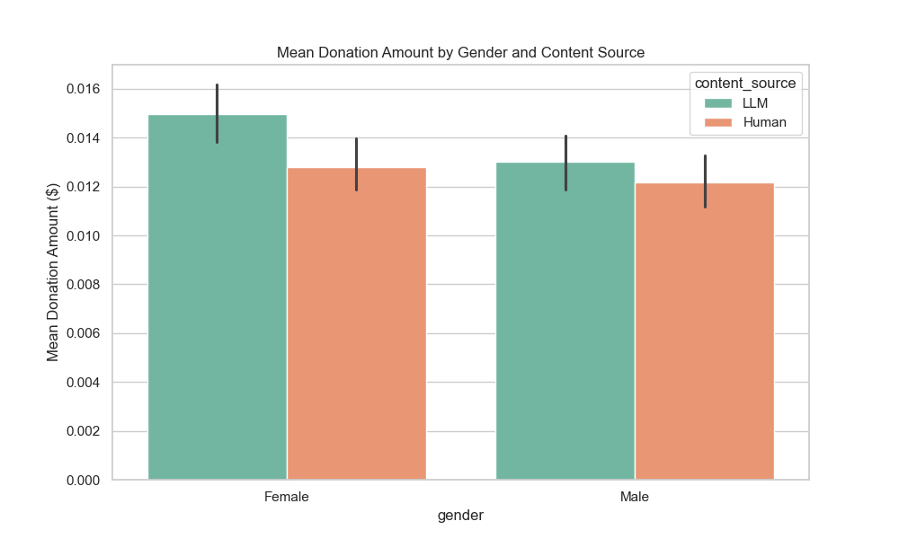
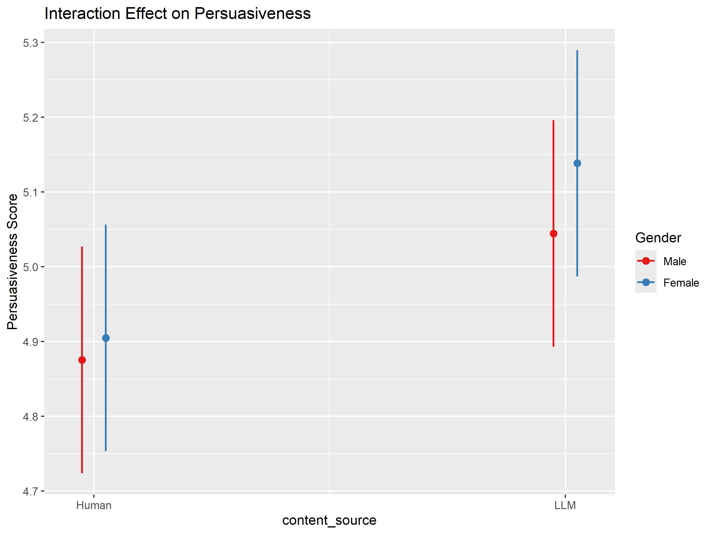

Gender Differences in Responses to LLM-Generated versus Human-Written Donation
Appeals
A Multi-factorial Analysis of Digital Charitable Giving
Salah-din Mrait
Bachelor End Project • Data Science Joint Degree
Tilburg University — Eindhoven University of Technology
Supervisor: John Caffier
January 2026
The Research Problem
1
Charitable organizations increasingly use Large Language Models (LLMs) to create donation appeals
2
Women donate more frequently and give
higher amounts than men across cultures
3
LLMs can produce emotionally polished
language but lack genuine emotional experience
4
Will women — who value emotional authenticity — respond differently to LLM content?
Main Research Question
"Do women and men respond differently to LLM-generated versus human-written emotional
donation appeals for cancer charities?"
Theoretical Background
🧠
Empathic Concern: Women report higher levels of empathy. Perceived
sincerity matters when emotional engagement drives persuasion.
⚠️
Algorithm Aversion: People trust algorithms less in emotional/moral
domains. Women may react more negatively once LLM authorship is revealed.
❤️
Care vs. Justice Orientation: Women adopt care-focused moral reasoning; men
lean toward rule-based thinking. LLM appeals may fail if caring relationship perception
weakens.
Research Hypotheses
H1 — Persuasiveness
Women will report significantly lower persuasiveness scores (1–7 Likert
scale) for LLM-generated appeals than for human-written appeals, while men will show no such
difference.
H2a — Donation Amounts (Main Effect)
Women will allocate higher monetary amounts (USD 0.00–0.10) to
charities than men, regardless of appeal source.
H2b — Donation Amounts (Interaction)
The difference in mean donation amounts between men and women will be
significantly larger for human-written appeals.
H3 — Engagement
The likelihood of women selecting "Like" will be significantly higher
for human-written appeals compared to LLM-generated appeals.
Research Methods
725
U.S. Participants
4,350
Total Observations
6
Appeals per Participant
📊
Design: Within-subjects experiment • Human vs
LLM-generated donation appeals • Cancer charities
📏
Outcomes: Engagement (Dislike/Neutral/Like) •
Persuasiveness (1-7 scale) • Donation ($0.00-$0.10)
Analytical Approach
1
Engagement: Ordinal logistic mixed-effects
regression (cumulative link model)
2
Persuasiveness: Linear mixed-effects model
(continuous outcome)
3
Donation: Hurdle model (35.3% zero-inflation
required two-part approach)
All models include:
✓ Random intercepts for participants
✓ Random intercepts for posts
✓ Gender × Content Source interaction
✓ Random intercepts for posts
✓ Gender × Content Source interaction
Model Selection Justification

Persuasiveness: Q-Q plot confirms approximate normality → Linear
mixed-effects model appropriate

Donation: 35.3% zeros (zero-inflation) → Hurdle model required
Descriptive Statistics


Main Effects: The LLM Advantage
| Outcome | LLM Effect | p-value | Interpretation |
|---|---|---|---|
| Engagement | OR = 1.58 | < .001 | 58% higher odds of favorable rating |
| Persuasiveness | b = 0.20 | < .001 | +0.20 points on 7-point scale |
| Donation Amount | b = 0.0018 | .011 | Higher amounts for LLM appeals |
LLM-generated appeals outperformed human-written appeals on ALL
outcomes
Gender Effects on Donation

$0.0013
Women donate more (p = .026)
✓
H2a Supported: Women allocate higher
amounts than men
✗
Gender did NOT predict whether someone donated at all (p = .412)
Interaction: Engagement
Gender × Content Source (OR = 1.53, p = .011) SIGNIFICANT

→
Both genders prefer LLM content
→
Women show stronger preference for
LLM appeals than men
→
Steeper slope for women indicates the significant interaction
H3 NOT Supported: Women preferred LLM content more, not less
Interaction: Persuasiveness
Gender × Content Source (b = 0.06, p = .428) NOT SIGNIFICANT

→
Both men and women rated LLM content as more persuasive
→
Visible gap is not statistically
significant
H1 NOT Supported: No interaction between gender and content source on
persuasiveness
Interaction: Donation Amount
Gender × Content Source (b = 0.0002, p = .735) NOT SIGNIFICANT

→
Women donate more across both conditions
→
LLM appeals led to higher donations for both genders
→
Parallel lines = no interaction
H2b NOT Supported: Gender gap in donations is consistent across content
sources
Hypothesis Testing Summary
| Hypothesis | Prediction | Result |
|---|---|---|
| H1 | Women rate LLM as less persuasive | Not Supported |
| H2a | Women donate more than men | Supported |
| H2b | Larger gender gap for human appeals | Not Supported |
| H3 | Women prefer human content for engagement | Not Supported (Opposite found) |
Discussion
1
The "Sincerity Gap": Gender differences appeared only for quick, automatic
engagement — not for deeper persuasiveness judgments or actual behavior.
2
Algorithm Aversion Not Activated: Participants weren't told about LLM
authorship, so skepticism wasn't triggered. Aversion is about perceived identity, not
linguistic features.
3
Care Orientation Persists: Women's higher donations are triggered by
distress signals in the message — regardless of whether a human or machine wrote it.
Practical Implications
✓
LLMs can generate donation appeals that perform at least as well as human-written content
✓
Especially useful for nonprofits with limited resources
⚠️
Disclosure policies require caution —
labeling content as LLM-generated may reduce impact
→
Organizations face a trade-off
between transparency and effectiveness
Key Takeaway:
Gender does not limit the value of LLMs in fundraising. Donors respond to content quality,
not author identity.
Limitations & Future Research
🔒
Participants were not disclosed about LLM authorship — limits
generalizability to disclosed contexts
🎯
Single domain (cancer charities) — findings may differ for other causes
💰
Small donation amounts ($0.00-$0.10) — may not scale to larger giving decisions
🇺🇸
U.S. sample only — cross-cultural replication needed
Future Directions
1
Test effects when LLM authorship is disclosed
2
Explore other charitable domains
3
Examine long-term donor relationships
Conclusion
LLM-generated donation appeals outperform human-written appeals across all outcomes.
Gender differences do not limit the effectiveness of LLM-generated charitable appeals.
Women showed stronger initial preference for LLM content, but this did not affect final
persuasiveness judgments or donation amounts. Women's higher generosity persists regardless of
content source.
Thank You
Questions?
Salah-din Mrait
s.mrait@tilburguniversity.edu
Supervisor: John Caffier